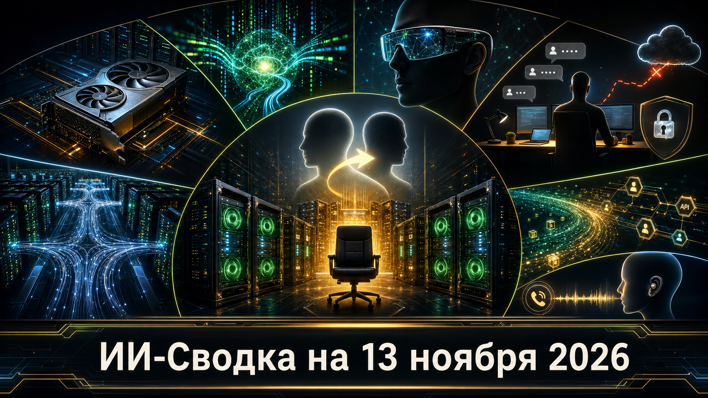

День принёс редкое сочетание корпоративного перелома, новых аппаратных платформ и продуктовых релизов моделей. NVIDIA меняет руководителя, AMD и Huawei наращивают альтернативы для крупных ИИ-кластеров, а Google и Baidu расширяют доступ к моделям для агентных и разработческих задач.
Одновременно инцидент Fireworks AI показывает, что риски поставщиков ИИ-инфраструктуры быстро передаются их корпоративным клиентам. В России Алиса AI переходит от ответов к выполнению поручений, включая звонки.
NVIDIA сообщила, что Дженсен Хуан немедленно покинул должности президента, CEO и члена совета директоров. Исполняющей обязанности CEO назначена финансовый директор Колетт Кресс; при этом она продолжит выполнять обязанности CFO до назначения постоянного руководителя. Совет директоров начал поиск преемника.
Для рынка это исключительное событие: NVIDIA остаётся ключевым поставщиком ускорителей, сетевых решений и стоечных систем для ИИ-инфраструктуры. Компания заявляет о сохранении операционной деятельности и продуктовой дорожной карты, однако причины ухода Хуана публично не раскрыты. Детали кадрового перехода приводит IA Compa со ссылкой на сообщение NVIDIA и Associated Press.
AMD представила ускоритель Instinct MI450X с 288 ГБ памяти HBM4 для rack-scale платформы Helios. Новый вариант входит в семейство MI400 и рассчитан на развёртывания рядом с MI455X на общем программном стеке ROCm.
Компания также раскрыла собственные результаты инференса MI455X на DeepSeek-R1 в конфигурации MLPerf Offline — 21 333 токена в секунду на GPU. Эти показатели и сравнения с конкурентами следует считать заявлениями AMD, а не независимым сопоставительным тестом. Тем не менее релиз усиливает борьбу за крупные закупки инфраструктуры, где важны объём памяти, стоимость инференса и интеграция в стойку. Параметры анонса собраны в материале IA Compa.
Google представила Gemini 4 Hydrogen — скоростную модель линейки Gemini 4, ориентированную на программирование и агентные workflow. Она доступна через Gemini API и AI Studio, поддерживает уровни reasoning от low до xhigh и заявленное контекстное окно до 1 млн токенов.
Заявленная цена — $1,50 за миллион входных и $7,50 за миллион выходных токенов. Это делает Hydrogen попыткой занять массовый слой задач, где требуется не максимальная frontier-способность, а предсказуемая цена длинных агентных процессов. Бенчмарки модели и её позиционирование остаются заявлениями Google; подтверждёнными являются сам релиз, каналы доступа и опубликованные тарифы. Детали приводит IA Compa.
Samsung, Google и Gentle Monster представили AI-очки с камерой, микрофоном и динамиками, в которых Gemini отвечает на голосовые вопросы, помогает с навигацией и интерпретирует видимое пользователю окружение. В числе заявленных функций — перевод разговоров в реальном времени более чем на 70 языков.
Предзаказы, по данным публикации, стартовали 12 ноября, а продажи в США и Южной Корее запланированы на 10 декабря. Это очередная ставка Google на то, что ИИ-ассистент станет постоянным интерфейсом устройства, а не приложением, которое пользователь открывает отдельно. Официальный продуктовый анонс в исследовательском пуле не извлечён напрямую, поэтому характеристики и сроки следует относить к сообщениям производителей и профильных источников. Сводку приводит Matrix News.
Notion сообщила, что в результате компрометации Fireworks AI могли быть раскрыты транскрипты из функции Notion AI Insights у ограниченной части рабочих пространств. По данным Notion, затронуто около 1% клиентов; компания отключилась от Fireworks, остановила связанную обработку и удалила данные, находившиеся у поставщика.
Инцидент важен не только как утечка отдельных диалогов: он показывает, как компрометация инфраструктурного партнёра переносит риск на корпоративный продукт, в котором пользователи могут обсуждать внутренние документы, учётные данные и рабочие процессы. Полный объём набора данных и личность атакующего не раскрыты. Notion рекомендовала затронутым пользователям сменить пароли, API-ключи и другие секреты, введённые в чатах. О раскрытии пишет TechCrunch.
Huawei раскрыла архитектуру Peerium для объединения большого числа собственных ускорителей в единую вычислительную систему. Atlas 950 SuperPoD описывается как конфигурация с более чем 8 000 ускорителей Ascend 950DT, а SuperCluster — как развёртываемая и тестируемая система на 256 000 computing cards.
Заявленная цель — обучение моделей масштаба до 40 трлн параметров на собственной китайской аппаратной базе. Если инфраструктура достигнет заявленной зрелости, она станет альтернативой западным GPU-кластерам для китайских лабораторий и облачных провайдеров. Однако технические показатели, масштабируемость и график поставок исходят от Huawei и пока не получили независимой оценки. Об анонсе сообщает Live Science.
Baidu открыла через платформу Qianfan API-доступ к ERNIE 5.5 Flash Preview. По опубликованной информации, модель имеет контекст до 1 млн токенов, 280 млрд общих параметров и 14 млрд активных параметров на токен.
Это отдельный этап после ранее выпущенной базовой версии ERNIE-5.5-Flash-Base: новая конфигурация переводит линейку в developer-facing preview. Baidu также заявляет намерение позже открыть веса по лицензии Apache 2.0, но срок такого выпуска в доступном материале не подтверждён первичным источником. Для разработчиков это означает ещё один вариант длинноконтекстной MoE-модели в китайской экосистеме API. Детали приводит Matrix News.
Яндекс сообщил, что Алиса AI научилась действовать по поручению пользователя: среди заявленных сценариев — совершение звонков и выполнение других задач. Само название анонса указывает на переход от ответов и рекомендаций к действиям во внешних процессах.
Практическая ценность таких функций будет зависеть от ограничений полномочий, прозрачности действий, подтверждений перед чувствительными операциями и качества обработки ошибок. В доступном материале отсутствуют детальные технические условия, список интеграций и режимы согласования, поэтому их нельзя считать подтверждёнными. Официальный анонс опубликован на странице Яндекса.